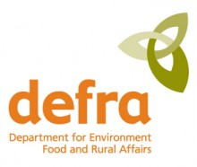

The UK Climate Change Risk Assessment (CCRA) 2012 has now been published. It is the first assessment of its kind for the UK and the first in a 5 year cycle. It provides underpinning evidence that can be used by Government to help inform priorities for action and appropriate adaptation measures. It also highlights where more work is needed to understand the scale and nature of the risks, and to help us consider what action we need to take and as such will inform the development of the National Adaptation Programme (NAP) which UK Government will publish in 2013.
To coincide with the publication of the UK CCRA 2012 and given the importance of local adaptation action, the Department for Environment, Food and Rural Affairs (Defra) commissioned the Climate Change Partnerships across England to produce an information pack to highlight key risks and opportunities from climate change within each area.
Drawing on information within the CCRA and other local evidence, the analysis illustrates what climate change may mean for people, businesses, community and charitable groups, local authorities, and other organisations across key sectors, at the local level. It also highlights where there is a strong case for greater local action. Your views on this assessment will be critical for us to contribute to the next step in the process, which is the development of the National Adaptation Programme (NAP), led by Defra and also the development of the Environment Agency’s new role as the adaption delivery body in England.
The NAP will set out what policies and actions are needed to take action on the risks (and opportunities) from climate change. Defra aim to co-create this with involvement from all relevant stakeholders, and to ensure a strong local component. A key part of this will be informed by the ‘Call for Views’ which means individuals, businesses, local authorities, community, charitable or voluntary organisations can tell Defra:
- how climate risks affect us;
- the most urgent areas for action;
- what action is already underway to address risks;
- the key barriers to addressing risks;
- of new or innovative actions or opportunities for addressing risks.
This will be a key opportunity for us to feed in our own unique perspectives as the NAP is being developed. To take part in the Call for Views follow http://engage.defra.gov.uk/nap . This exercise will last until April 2012.
To read more about the implications for Yorkshire and Humber please visit http://www.yourclimate.org/pages/uk-climate-change-risk-assessment